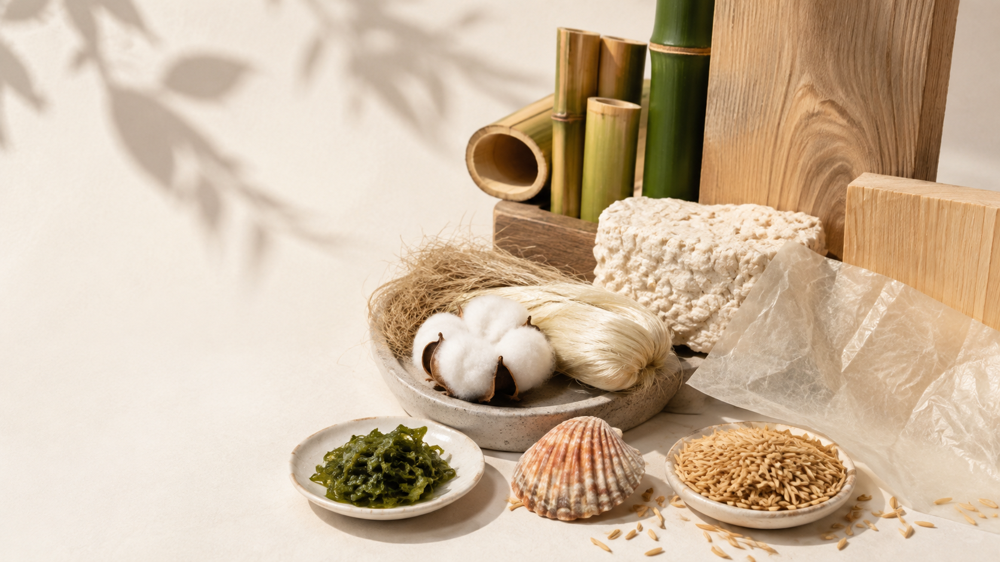
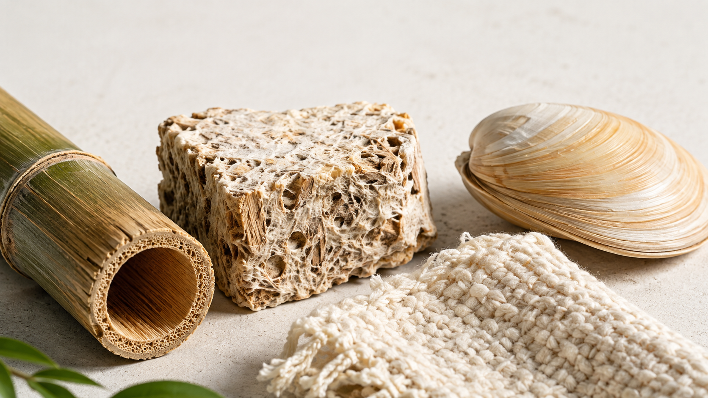
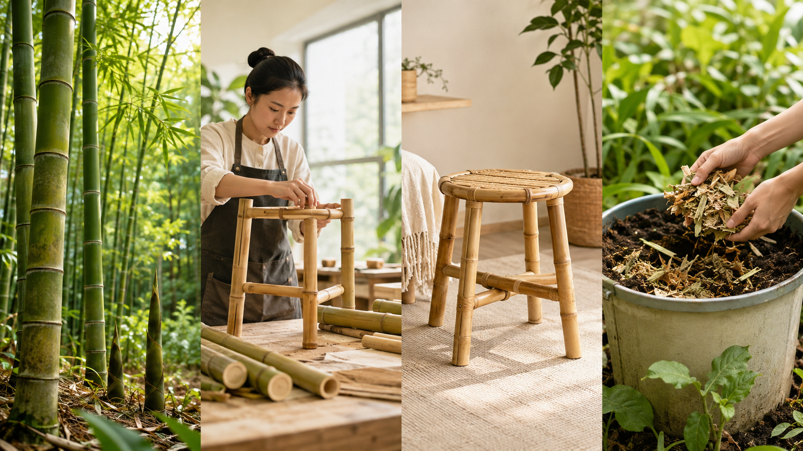
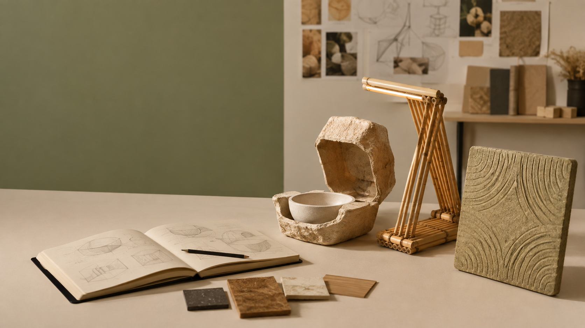

Nguồn nguyên liệu được bổ sung trong thời gian tương đối ngắn.
TUẦN 6 · CÔNG NGHỆ 12
Vật liệu
và Thiết kế
Từ cấu trúc vật liệu đến cơ hội thiết kế bền vững. Quan sát bằng chứng, đánh giá vòng đời và biến đặc tính thành một ý tưởng có lý do.
Bắt đầu khám phá
TIẾN TRÌNH HỌC TẬP0 / 4 hoạt động
- Giải mã vật liệu
- Giải mã bền vững
- Cơ hội thiết kế
- Pitch và phản biện
HOẠT ĐỘNG 01
Giải mã vật liệu
Nếu không gọi tên vật liệu, em có thể mô tả nó bằng những đặc tính nào?

MATERIAL MYSTERY
Quan sát trước. Gọi tên sau.
Chọn ba từ có thể kiểm chứng bằng quan sát hoặc thử nghiệm đơn giản.
Đã chọn 0 / 3 đặc tính
CẤU TRÚC→ĐẶC TÍNH→CHỨC NĂNG
HOẠT ĐỘNG 02
Tự nhiên có đồng nghĩa
bền vững?
Một vật liệu cần được đánh giá trong toàn bộ vòng đời, không chỉ ở nguồn gốc.

NATURAL = SUSTAINABLE?
Tre là vật liệu tự nhiên. Vậy tre chắc chắn bền vững?
Chọn một câu trả lời và giải thích điều kiện làm thay đổi kết luận.
SUSTAINABILITY SCORE
Chấm bằng bằng chứng
Mỗi tiêu chí từ 1 đến 5. Điểm cao chưa đủ, em cần giải thích vì sao.
12 / 20Vi sinh vật có thể phân hủy vật liệu trong điều kiện thích hợp.
Vật liệu đã dùng được xử lý để tạo vật liệu mới.
Vật liệu cũ trở thành sản phẩm có giá trị hoặc công năng cao hơn.
Kéo dài vòng đời qua tái dùng, sửa chữa và tái chế.
HOẠT ĐỘNG 03
Từ đặc tính đến
cơ hội thiết kế
Cơ hội xuất hiện khi một đặc tính vật liệu đáp ứng đúng nhu cầu của người dùng.

HOẠT ĐỘNG 04
Từ nghiên cứu
đến giải pháp
Một lựa chọn vật liệu thuyết phục cần lập luận từ nguồn gốc, đặc tính, vòng đời đến ứng dụng.
PHIẾU HỌC TẬP
Xuất hành trình nghiên cứu vật liệu
Hoàn thành cả bốn hoạt động để tạo phiếu PDF có Material Card, vòng đời, Sustainability Score, Translation Canvas, bản vẽ và Exit Ticket.
CÔNG NGHỆ 12 ·